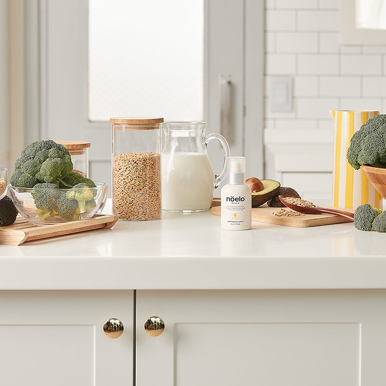

출생후 약 3개월 부터 18개월까지 진행되는 ‘구강기’는 자연스러운 발달단계랍니다. 어린아이는 입 부위의 촉감이 제일 예민한데요, 이때 물질을 입에 대면서 호기심을 충족시키고 뇌를
발달시킨다고 해요. 그리고 신체부위를 빨면서 긴장을 해소시키기도 하죠. 따라서, 이 단계에는 입에 대는 행위를 막기보다는 입에 닿는 것이 안전한지 점검을 해주는게 좋아요.

입에 닿아도 안심할 수 있는 Food Grade 성분
Food Grade 성분이란 식품원료로 등록된 성분을 말해요. 아이들이 손을 빨 때 많은 부모님들은 스킨케어 성분이 안전할지 걱정하시는데요, 식품성분만으로 만들어진 화장품은 먹어도 인체에
해가 되지 않는 안전성이 확보되었다는 장점이 있죠. 노엘로힐스 밀크 에센스 로션은 국내 최초로 100% 식품 그레이드 성분으로 만들어져서 입에 닿아도 안심하실 수 있답니다.